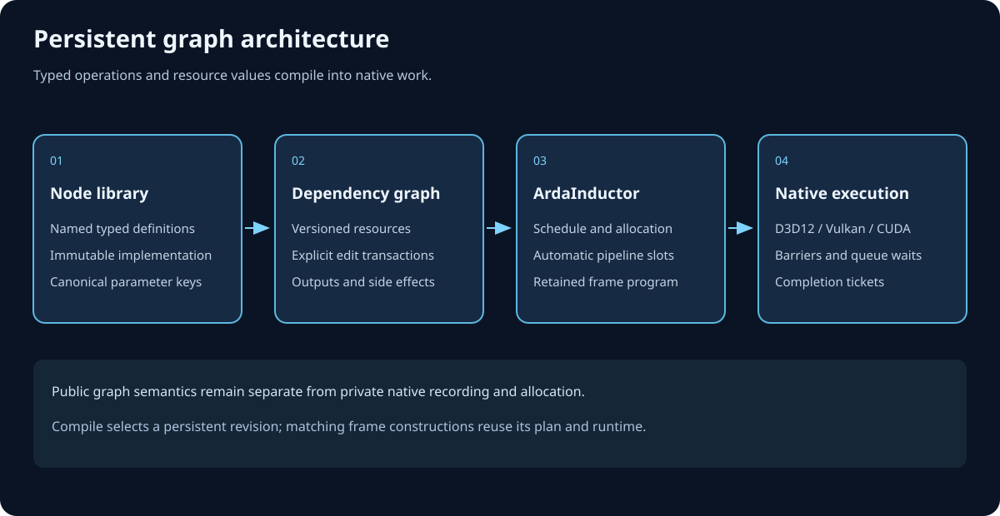
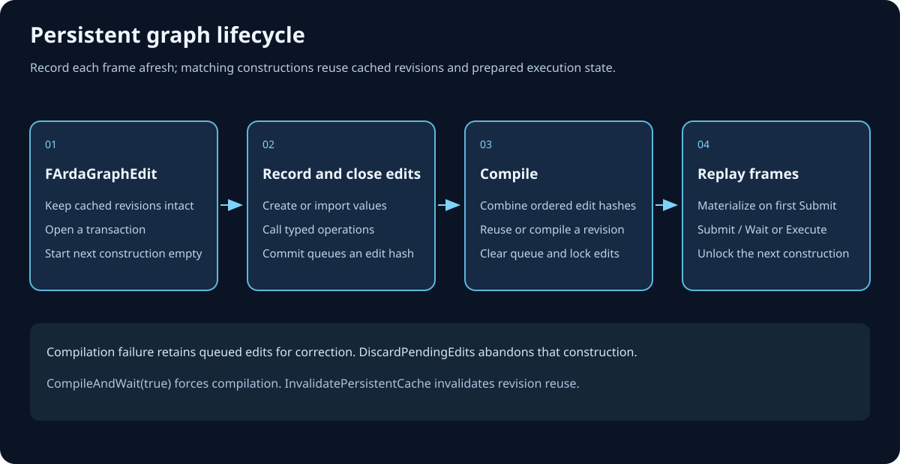

Persistent render graphs
Declare graphics and compute operations once, then compile and run the same dependency graph across frames.
For a continuous explanation of the current architecture, read How Arda Turns a Graph into GPU Work: a detailed essay following resource declarations through preprocessing, compilation, scheduling and completion.
Learning objectives
Explain persistent graph ownership, edit boundaries and replay, and choose the appropriate authoring guide.
A reusable compute and graphics program
FArdaDependencyGraph owns named typed nodes, logical resources and an ArdaInductor execution plan. It retains physical resources, inferred pipelines and CUDA executable caches. Regions with one producer allow consumers to be attached first. For repeated writers on an overlapping region, attach writes and intervening reads in their intended order; see resource ordering.

Edit, compile, replay
Open FArdaGraphEdit, record operations on resource variables, then call Edit.Commit() to queue the edit. Graph.CompileAndWait() combines ordered edit hashes and selects a cached revision or compiles a logical schedule and memory plan. Successful compilation clears the queue and locks edits. ExecuteAndWait() or SubmitAndWait() unlocks the next construction; its first ordinary edit starts empty, so omitted operations need no removal. Matching constructions reuse compilation results and prepared runtime, including earlier variants in the bounded revision cache. The first submission materializes native resources. Repeated execution without new edits also remains valid. Use CompileAndWait(true) to force compilation and InvalidatePersistentCache() to invalidate reuse.

Working examples
The triangle renderer (Source/ArdaTests/RHITest/Private/ArdaTriangleRenderer.cpp) assembles vertex upload, index upload and draw nodes in its first graph, then retires the uploads and caches draw graphs per swap-chain image. The terrain renderer (Source/ArdaTests/Examples/ARDGExample/Private/ArdaTerrainRenderer.cpp) assembles separate settings/camera uploads, settings copy, heightmap generation, erosion, triangulation, depth-tested drawing, overlay and optional readback nodes. Intermediate resource values let ArdaInductor infer their execution order even when consumers are attached first. Both release cached backbuffers before resize. CornellDenoising integration adds OIDN spatial or NPPD temporal inference between ray tracing and presentation using imported CUDA kernels in the same graph.
The declaration contract
- Single-producer regions order readers after their producer. Regions with repeated writes order hazards by original successful attachment order; see the write-read-write example.
- Declare every native resource access with state and range.
- Semantic parameters and shader settings stay immutable between edits.
- Imports are retained and restored to their entry state and graphics-queue ownership.
- Check all edit, attachment, execution and completion statuses.
Capabilities and limits
Graphics, meshlet, compute, ray-tracing and work-graph pipeline requests depend on backend capabilities. Each node can declare an overridable admission contract; feature requirements explains early rejection, inferred needs and the remaining native-feature integration gaps. CUDA libraries need declared accesses and the framework stream; capture requires explicit adapter support. Bounded search retains a feasible plan within its work budget. The offline Python model frontend compiles supported static models into ordinary graph operations. Automatic recovery of hidden library accesses or a complete portable program from arbitrary compiled PyTorch/CUDA Graph execution remains unsupported. See implemented model export and remaining work.
Choose a starting point
Use the minimal graph, renderer guide, developer guide and API inventory.
Node authoring and compiler guides
- Batching and concurrent edits: typed argument arrays, pipeline batches, automatic draw instancing and atomic edit publication.
- Registering nodes: parameter schemas, named callables, shader stages, CUDA mappings and graph edits; portable runtime definitions and model packages.
- Inductor developer guide: revisions, scheduling, memory, CUDA batches and telemetry.
- Pipeline assembly: typed stage composition, validation, native creation and reuse.
- Binding preparation: physical resources, views, bindless tables and ray shader tables.
- Feature modularity audit: ownership and capability-admission boundaries.
- Documentation map and maintenance: usage paths and synchronization commands.
Chapter summary
Declare typed operations and resource values, compile through an explicit edit, then reuse the retained plan across frames.
Source and API
Read the developer guide, pipeline guide, public API reference and graph declarations.